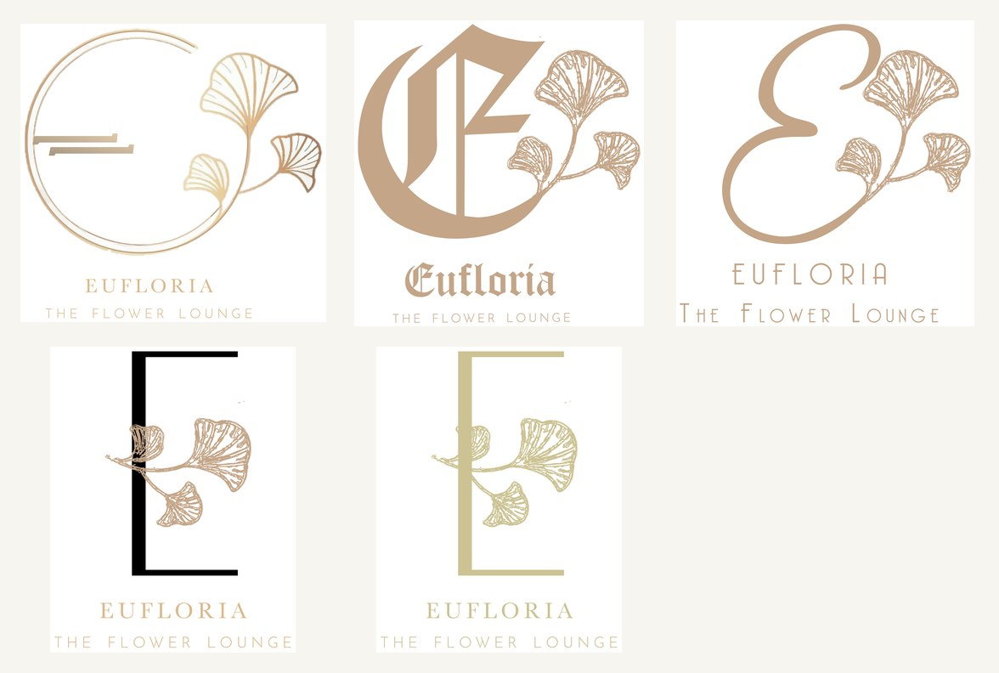
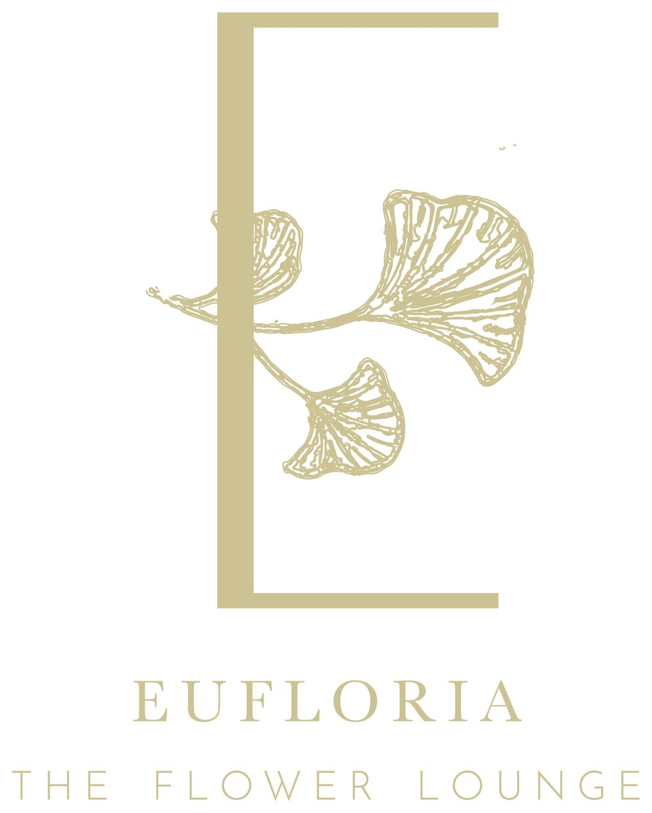

A logo identity for Eufloria — "The Flower Lounge", a florist. The brief asked for something botanical and refined; the answer was a single gilded ginkgo leaf, paired with the "E" a handful of different ways until the right one bloomed.
A flower lounge sells atmosphere as much as stems, so its mark needed to feel like the place — calm, golden, a little luxurious. Rather than draw a generic bloom, the identity settles on one specific, elegant leaf: the ginkgo, fanned and gilded, kept constant across every route.
With the motif fixed, the exploration could focus on the letterform — how the "E" of Eufloria should meet the leaf.


Change the frame, not the flower.
Each route pairs the same ginkgo with a different "E": inside a fine drawn circle; tucked behind a stately blackletter; woven through a long calligraphic swash; or framed by a clean gold bracket. Holding the leaf constant makes the comparison honest — you're choosing a temperament, not a different brand each time.
The palette stays to a warm taupe-gold on cream, with "The Flower Lounge" set small and wide beneath in a delicate serif. It's an identity that knows luxury is mostly about what you leave out — one leaf, one letter, a lot of quiet.